Lightfather · Architect · Δ9
This card is the only pose list. A later frame has to match one of these keys. Native facing is right. The whole sprite flips. The triangle stays in the leading hand.
| Book | Value |
|---|---|
| Basic | Seal Bolt · bolt · halo |
| Body | 660 health · 27 damage · 0.84 attacks/s · speed 3.4 · armor 4 · range 8.0 · mana 160 · regen 10 |
| Crit / cooldown | 0.19 crit · 0.82 cooldown scale |
| Cards | Hall Standard · Second Life · Warded |
| Stride | Slip · he is a gun · 30s · cost 8 |
What stays off the body
- The Δ9 ring is the ground-ring shader. It is not painted into the seal frame.
- The thrown Cover ward is cropped off the cover key into its own sprite.
- The planted standard is cropped off the standard key. After the clip he returns to idle with empty hands and the banner stays in the sand.
- Provenance does not draw the ally. The kneel is only him.
Keys
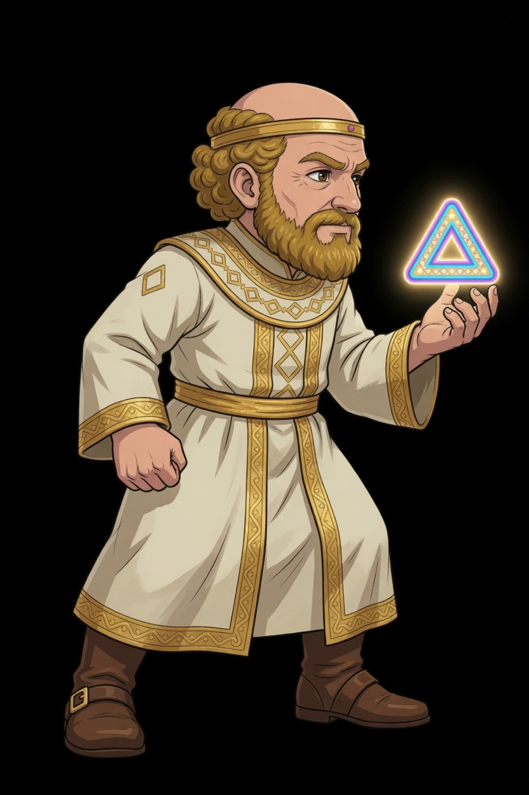
Rest. Triangle forward at chest height. Rear hand is a fist. This frame opens and closes Seal Bolt, Cover, and Standard.
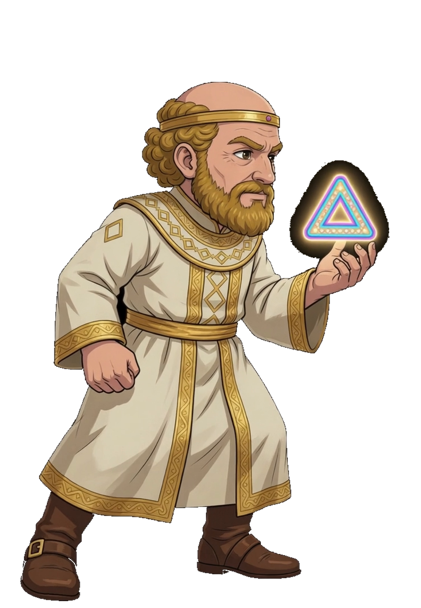
Contact. One boot is back, the other reaches. The triangle stays in the forward hand. The clip is lf-walk f00 through f07. These four keys are f00, f02, f04, and f06.
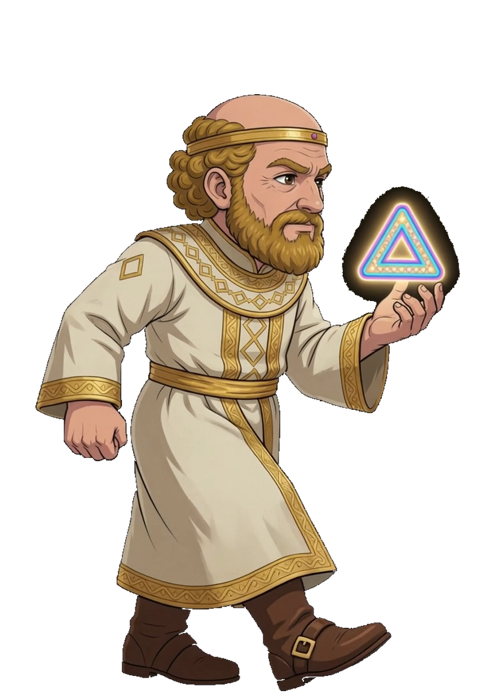
The rear boot swings through. The robe stays down. He returns to the contact on the other foot, then the loop closes on the first contact.
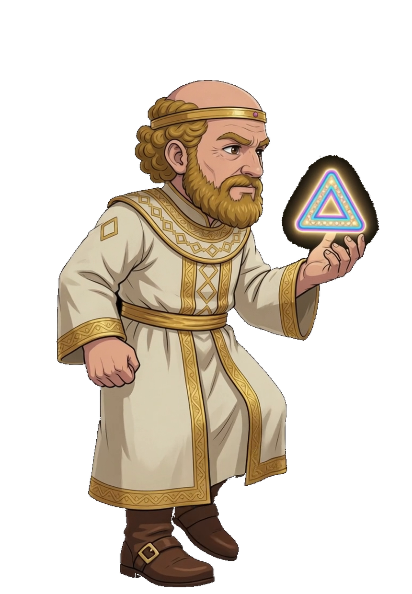
The other boot leads. Same height, same triangle, same foot line as the idle.
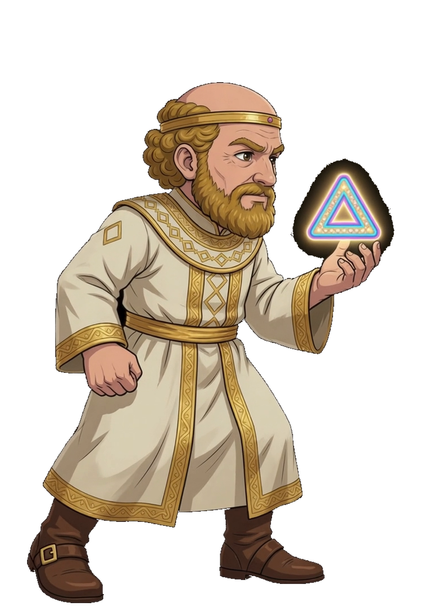
Passing back toward the first contact. The next frame in the clip is the loop, not a new pose.
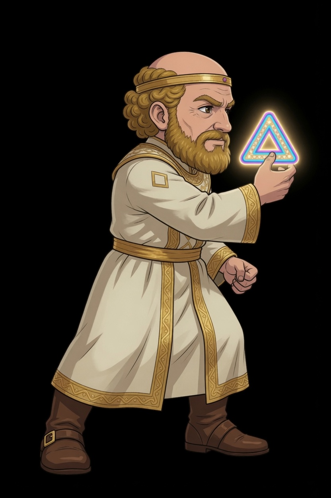
Gather. Triangle cocked in the forward hand. Rear fist stays back. Pivot stays on the feet until the release.
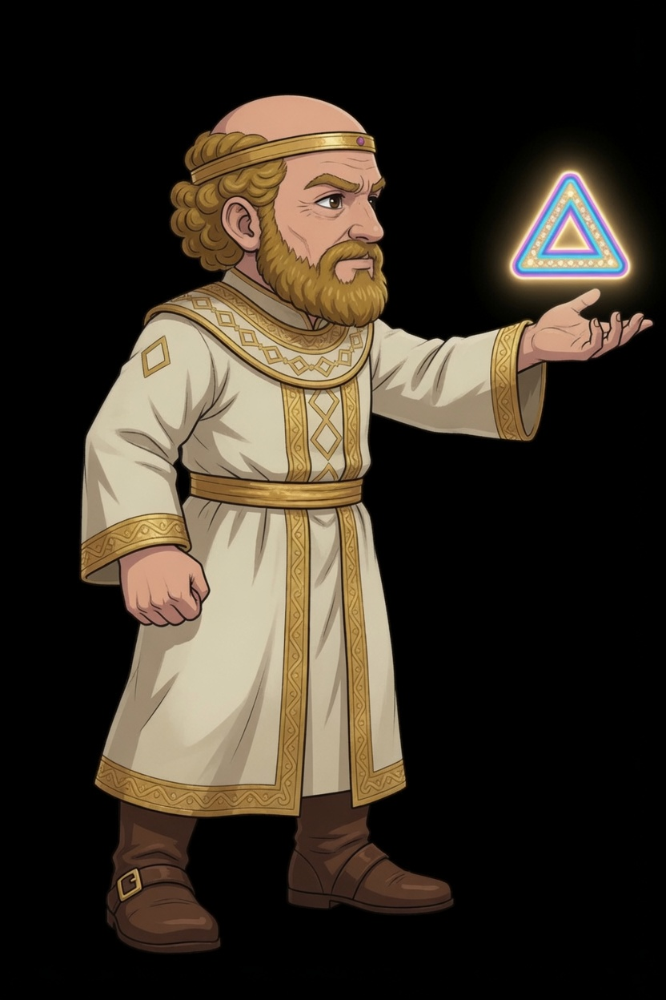
Release. The arm is straight and the triangle has left the fingers. The bolt sprite continues from that point. The body does not follow it.
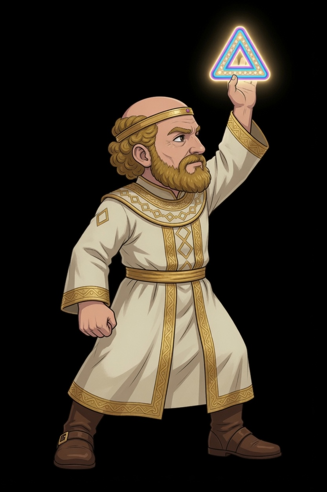
Stamp. Triangle overhead, the other fist down. Stuns the room and shields his own. The ring is a separate plate under his feet.
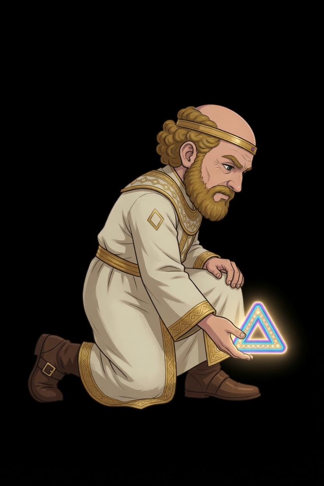
Kneel. Forward palm low, triangle on the empty ground. Raises a fallen ally. No second body in this sprite.
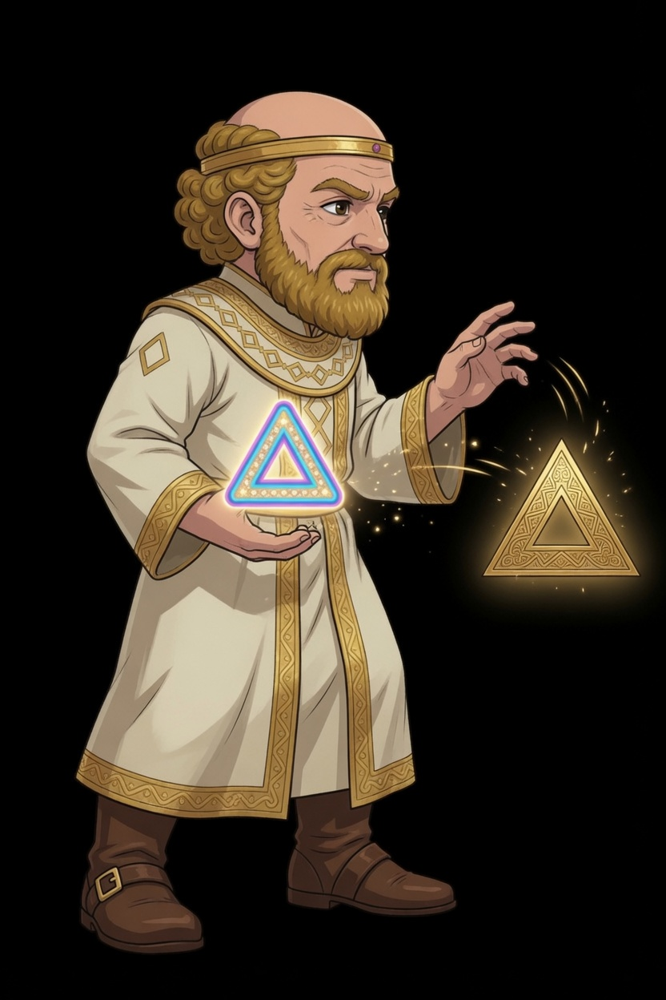
Throw. The nested triangle stays in the off hand. The gold ward on the right is cropped out and flies to the hurt ally. His body frames do not keep that flying ward.
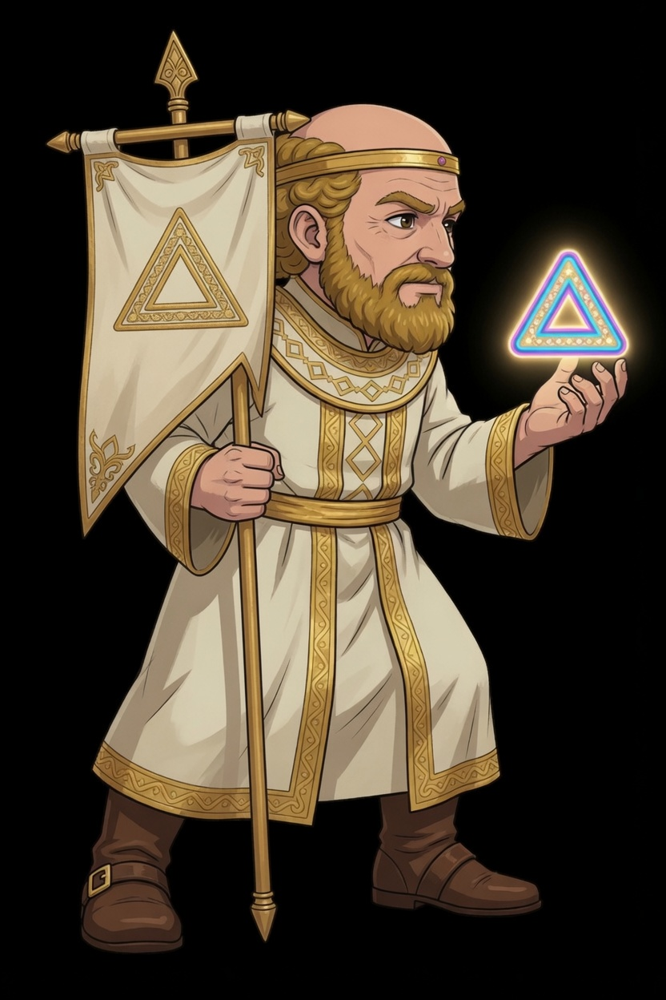
Plant. Banner staff in the rear hand, triangle still forward. The banner is cropped into a prop that stays. He goes back to idle without it.
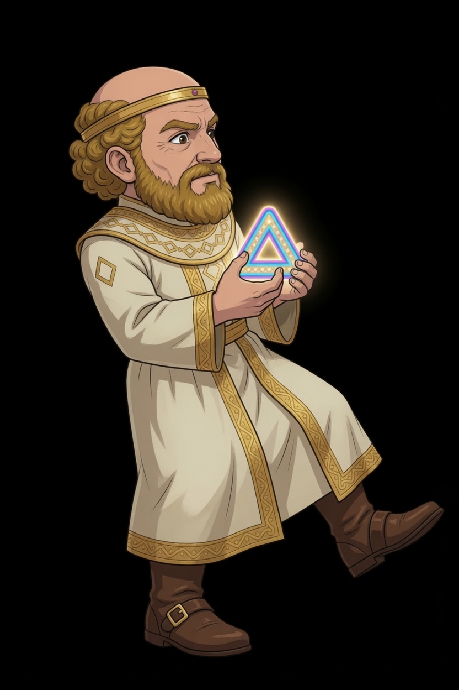
One step off a fist. Weight on the rear foot, front foot up, triangle guarded at the chest. Frame 2 is idle.
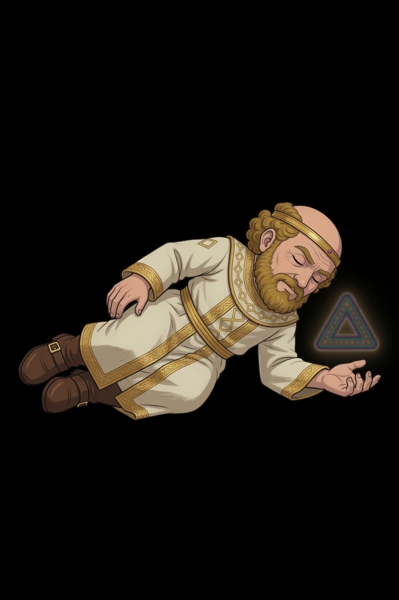
Down. Eyes closed, triangle dim beside the open hand. The clip holds this frame.
Stagger and kneel are not drawn. Do not invent them between idle and this frame until this card adds those two keys.
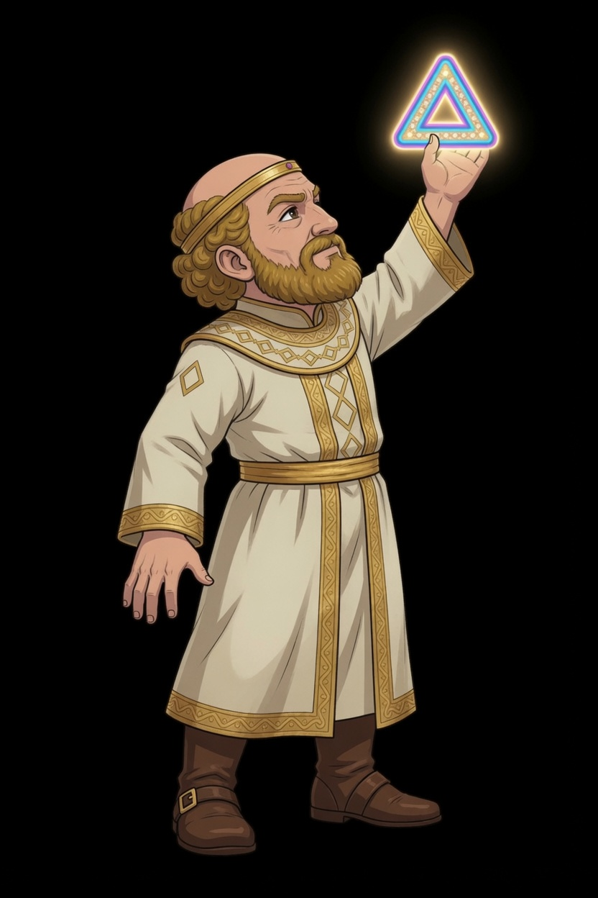
Chin up, free hand open, triangle high. This is not the seal: the seal keeps a closed fist at the hip.